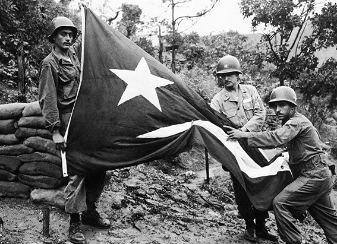

NATIONAL GEOGRAPHIC
How Martin Luther King, Jr.’s multifaceted view on human rights still inspires today
HISTORY & CULTURE
The Reverend Martin Luther King, Jr. towers over history as a civil rights legend known for leading the movement to end segregation and counter prejudice against Black Americans in the 1950s and 1960s, largely through peaceful protests. He helped pass landmark federal civil rights and voting rights legislation that outlawed segregation and enfranchised Americans who had been barred from the polls through intimidation and discriminatory state and local laws.
But King knew it would take more to achieve true equality. And so he also worked tirelessly for education, wage equity, peace, housing, and to lift people out of poverty. Some of King’s most iconic speeches and marches were devoted to ending war, dismantling nuclear weapons, and bringing economic justice. As King said after receiving the Nobel Peace Prize in 1964, he believed that any “spiritual and moral lag” in humanity was due to racial injustice, poverty, and war.
His multifaceted view on human rights still inspires today, and on the third Monday in January every year, the United States honors King’s legacy of fighting for equal rights—and standing up for human rights everywhere.
During his lifetime, King’s views often made him unpopular and heralded harsh criticism. At the time of his assassination in 1968, a Harris poll revealed a low approval rating of only about 25 percent among white Americans and 52 percent among Black Americans. But in the decades after he was killed, more Americans came to recognize the enormity of King’s contributions. Communities across the country began to name streets and landmarks after him, and soon a push began to establish a federal holiday in his birth month of January.
“Hispanic” comes from the Latin term for “Spanish,” Hispanicus; the ancient Romans called the Iberian Peninsula Hispania. In the United States in the 19th century, the term “Hispano” was used to describe people descended from Spaniards who settled in the Southwest in the days before American annexation. But until the 20th century, “Hispanic” was mostly used to refer to things pertaining to ancient Spain.
In 1983, over objections from Southern lawmakers, President Ronald Reagan finally signed a bill creating the holiday into law and the first celebrations of Martin Luther King, Jr. Day took place in January 1986 although it would take another decade for states such as Arizona and South Carolina to follow suit.
King’s work continues to influence and inspire activism—particularly in the realm of environmental justice, as studies indicate that climate change disproportionately harms marginalized communities. Here are the many layers of King’s work that the U.S. honors on Martin Luther King, Jr. Day.
He advocated against the use of nuclear weapons
King was adamant that peace was inextricably linked to civil rights. Throughout the 1950s and 1960s, major powers like the United States and the U.S.S.R. were aggressively developing and testing nuclear weapons, and several times crept to the brink of warfare that threatened to annihilate the world.
King made clear the connection between the Black freedom struggle and the need for nuclear disarmament, writes nuclear studies and African American history expert Vincent Intondi in the book African Americans Against the Bomb: Nuclear Weapons, Colonialism, and the Black Freedom Movement. King argued that it would be “rather absurd” to integrate schools and lunch counters but not be concerned with world peace and survival.
King spoke out about nuclear warfare as early as 1957, when he signed onto a full- page advertisement in The New York Times that called for all nations to suspend nuclear tests immediately. When asked about his stance later that same year, King tied the weapons to the whole of war, and argued that they should be banned everywhere.
“It cannot be disputed that a full-scale nuclear war would be utterly catastrophic,” he told Ebony magazine in an interview. “The principal objective of all nations must be the total abolition of war.”
As part of King’s advocacy for peace and nuclear disarmament, he condemned the bombings of Hiroshima and Nagasaki the U.S. government had carried out more than a decade earlier to effectively end World War II. Today, Hiroshima is one of the only cities outside North America to celebrate Martin Luther King Day.
Comments :
- john Very good
- john Very good
Leave a Reply
Your email address will not be published. Required fields are marked*
Related posts:
-
 She was Genghis Khan’s wife and made the Mongol Empire possible
She was Genghis Khan’s wife and made the Mongol Empire possibleTents and animals. Horses and swords. The early days of the Mongol Empire were characterized by battle, conquest, and quick expansion, leading the people ruled by Genghis Khan to domination of the world’s largest contiguous empire.
View article -
This all Hispanic Army unit fought in the Korean War. Here’s one veteran’s story.
He joined the U.S. Army as a 19-year-old, seeing the military as his only way out of poverty, having left school in the eighth grade to farm to help his family in Cayey, Puerto Rico. Luis Sánchez Hernández served during World War II
View article -
 10 million enslaved Americans' names are missing from history.
10 million enslaved Americans' names are missing from history.When journalist Dorothy Tucker first learned about the 10 Million Names genealogical project, it helped amplify memories of long car journeys from Chicago to “Down South” in the 1960’s, where her mother’s family owned land.
View article